Potrero · 2026
Si hoy querés saber cómo viene tu gestión, ¿la respuesta ya está lista?
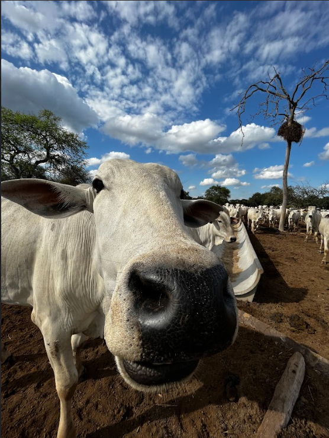
El desafío
Cuando la respuesta llega al cierre, ya no alcanza para corregir.
Cuadernos, planillas, WhatsApp, facturas y datos guardados por distintas personas.
Hay que revisar archivos, llamar al campo y volver a armar la historia.
Tropas, gastos, carga, lluvias e insumos se analizan cuando ya no se pueden corregir.
Nuestra etapa
La información del campo estaba dispersa y llegaba tarde.
Los módulos centrales y las consultas por WhatsApp ya están disponibles.
Seguimos desarrollando Potrero a partir del uso real de productores.
No es un producto terminado: es una versión que ya se usa y mejora con cada campo.
Potrero
Información productiva y económica, simple de encontrar y rápida de entender.
La información deja de estar repartida y empieza a conversar.
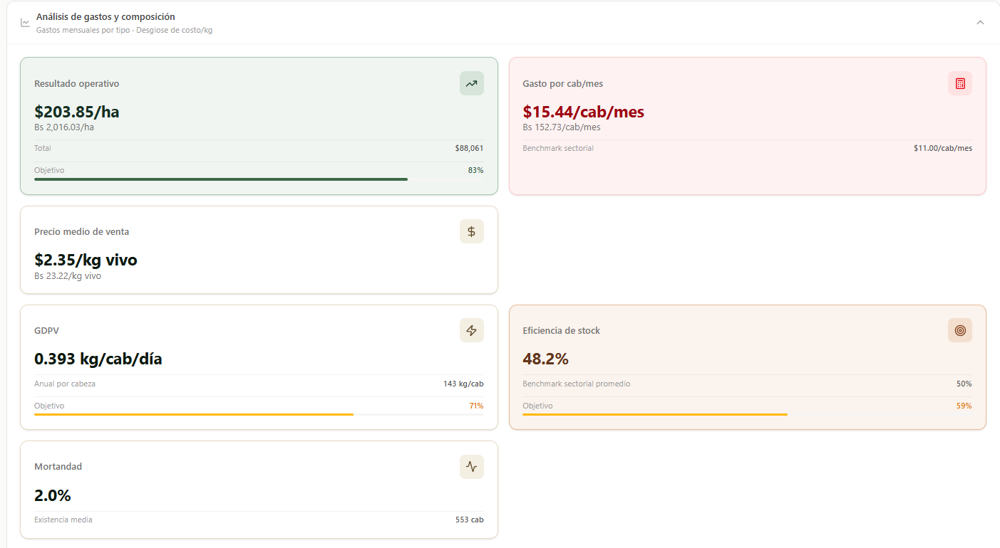
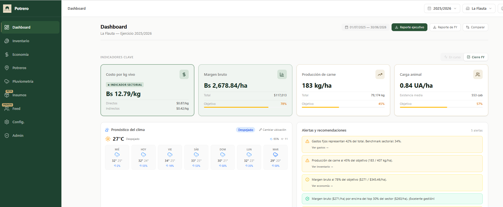
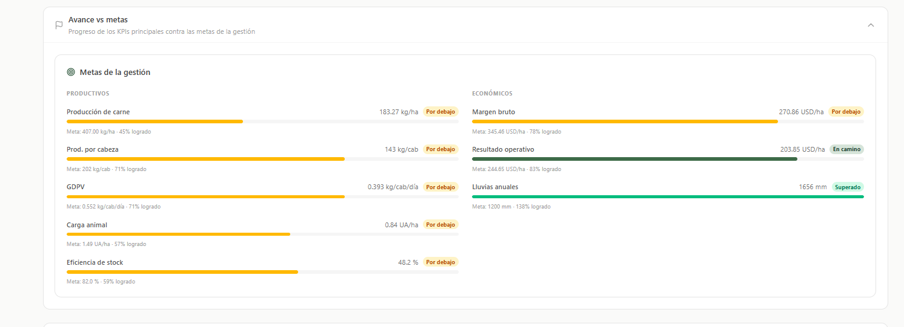
Inventario
Inventario, carga animal y tropas, siempre en el mismo lugar.
De la existencia total al detalle de cada tropa.
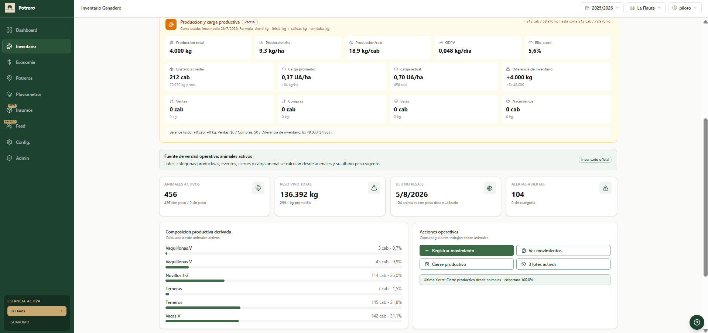
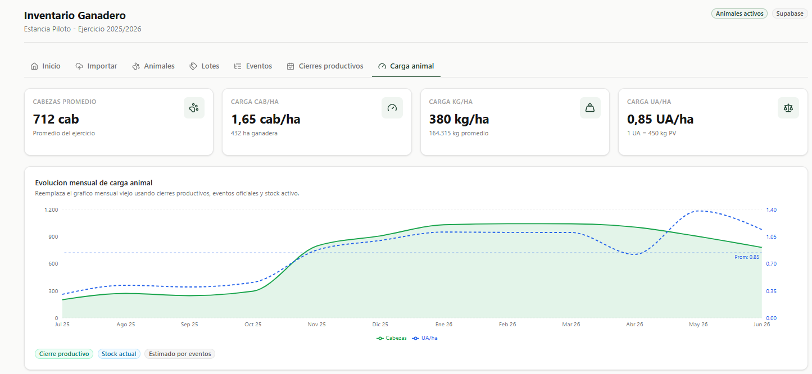
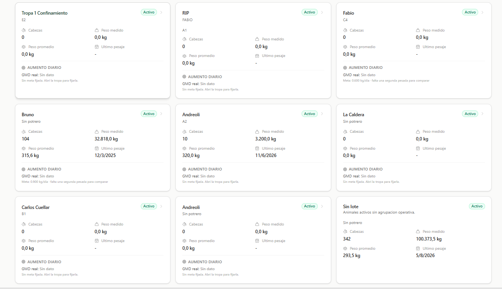
Gestión económica
Ingresos, gastos, margen y costos por categoría o maquinaria.
Además
Ejemplo con datos de una gestión real cargada en Potrero.
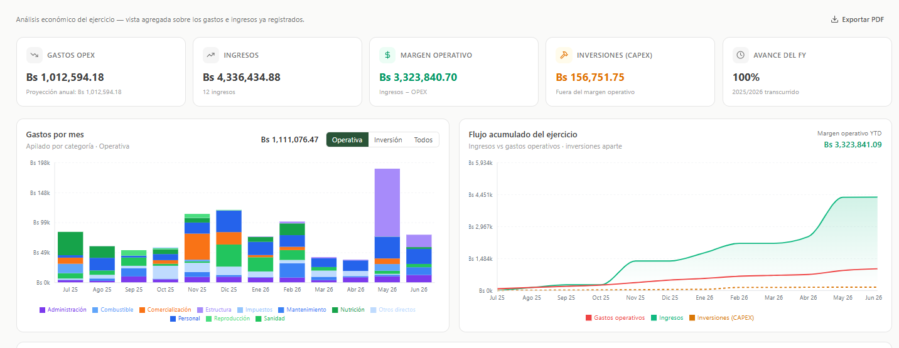
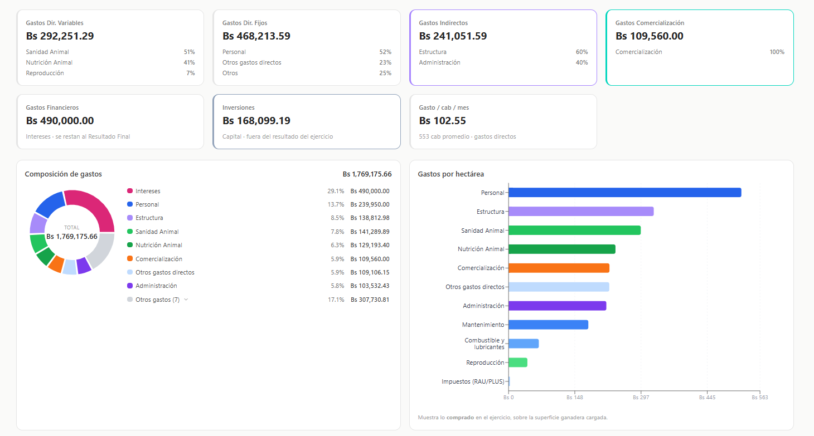
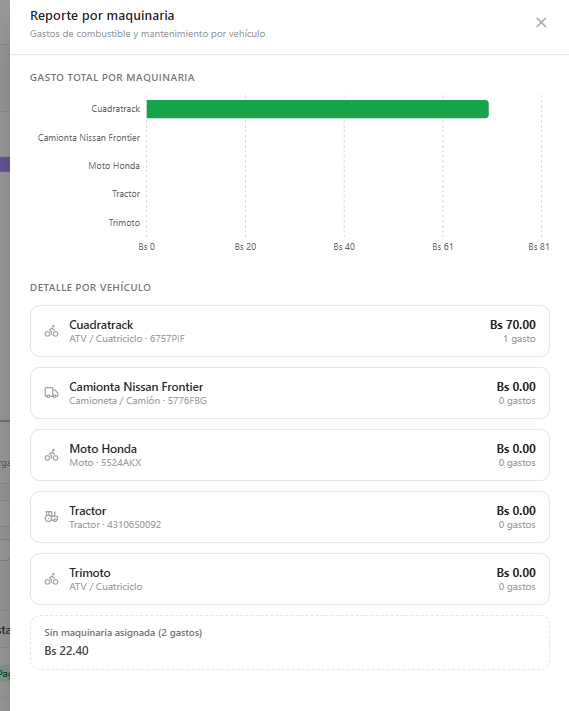
Potreros
Superficie, infraestructura, carga y rotación en un mismo lugar.
Decisiones con contexto
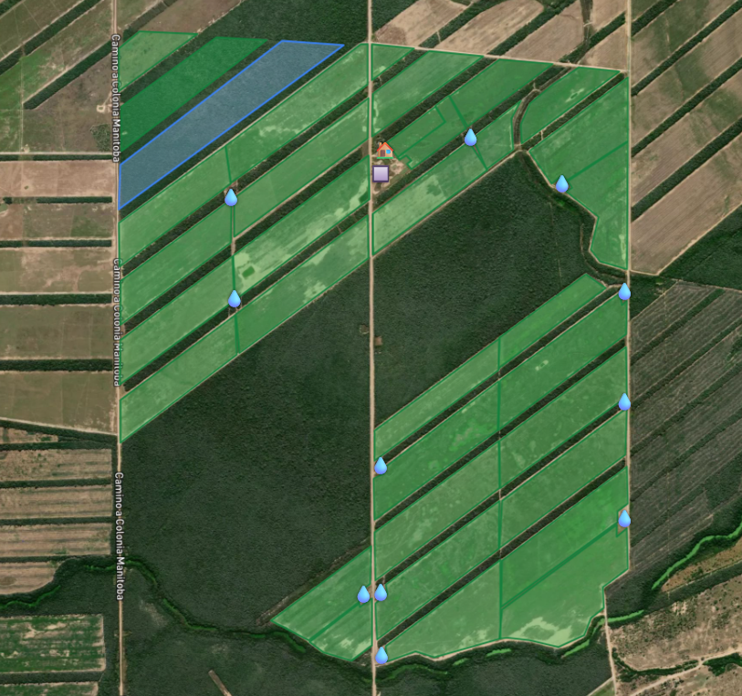
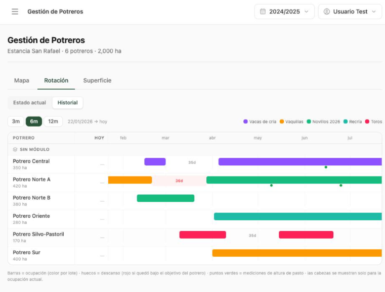
El mapa muestra dónde.
El histórico muestra cuándo.
Lluvia e insumos
Lluvias, stock, compras y movimientos disponibles para decidir.
Pluviometría
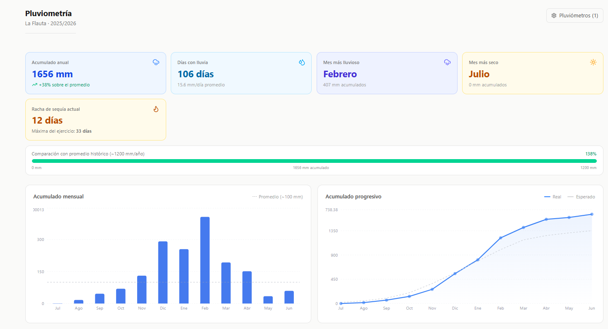
Insumos
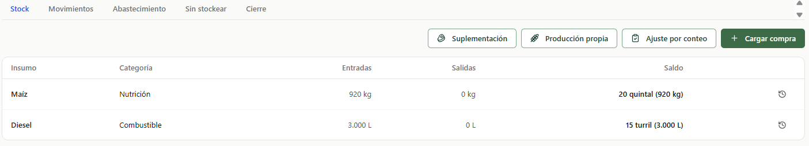
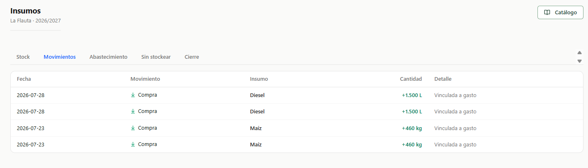
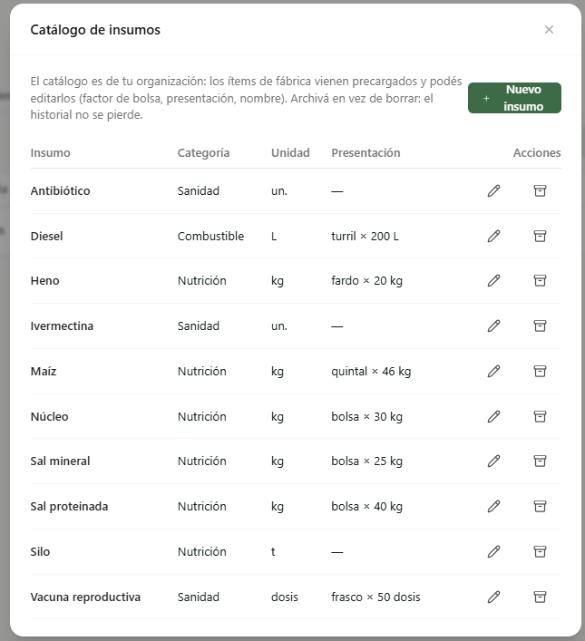
IA en WhatsApp
La integración ya está disponible para consultas.
Potrero interpreta, el productor confirma y el sistema ejecuta.
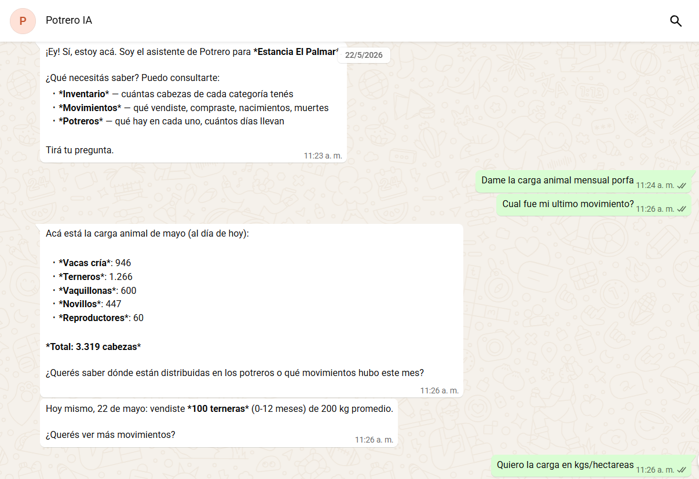
Radar de mercado
Prototipo funcional listo para recibir aportes anónimos.
Ganado, diésel, granos e insumos: mejor contexto para negociar.
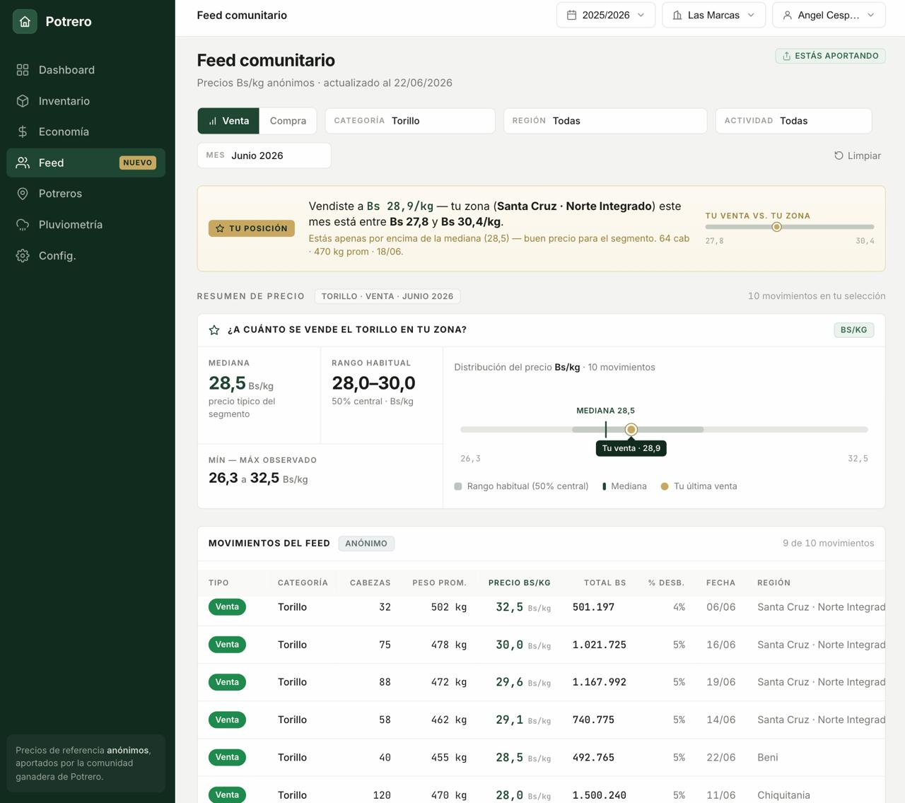
El diferencial de Potrero
Soporte técnico que conoce la herramienta, para que el ganadero no pierda tiempo en el mantenimiento.
Combinamos la parte productiva, económica y operativa en una misma plataforma integral.
Te ayudamos a acomodar tus datos para una carga inicial rápida: en 72 horas ves tus números.
Sabés de dónde sale cada número: origen, responsable y respaldo de cada dato.
El sistema acompaña el crecimiento de tu operación. Vivimos en mejora continua.
Para cerrar
La información lista cuando la necesitás.
Indicadores claros, sin reconstruir la historia.
Actuar mientras todavía se puede corregir.
Suscripción mensual o anual, según la cantidad de cabezas de ganado con las que quieras trabajar.